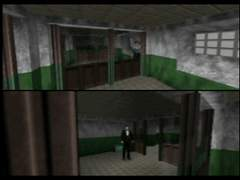
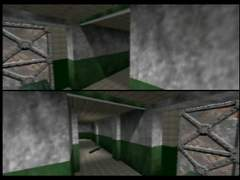
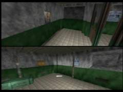
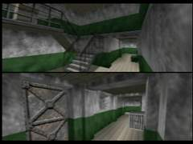
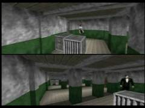

|
.
| Goldeneye
: Archives |
Taille
- Un Niveau
Vicieux et Traitre. La Salle aux Colonnes est bien fourbe, surtout
avec les rebonds des Grenades par exemple. Les Sscaliers peuvent etre
mortels, tout comme les Portes qui rendent la progression difficile.
Les Vitres contribuent à cet aspect cloisonné du Niveau.
Décor - Certains Endroits se ressemblent, nottament les 2 Parties avec les Vitres. Y a aussi les 2 Passage Secrets, avec soit un Gilet, soit l'Arme choisie. La Couleur Verte est omni-présente, ce qui contribue un peu à se perdre, du moins au Début. Armes - Un Excellent Niveau en terme de Taille pour du License to Kill abusif. Les Roquettes sont terriblement dangereuses à utiliser, comme dans Facility. Les Power Weapons sont bien, tout comme les autres Armes pluis classiques. Camping - Le Campeur aime bien la Salle où on commence en Mode Solo. Y a aussi à coté de l'Escalier (n'importe lequel) qu'on peut tranquillement se faire des points en License To Kill. Les Bureaux Vitrés sont un bon endroit, mais pas assez planqué au Gout du Campeur. |
 |
 |
 |
C'est
l'endroit le plus fréquenté, le croisement de 4 Chemins.
La Caisse Grise est traitre en License To Kill si on la fait sauter.
On peut aussi se cacher derrière en s'agenouillant... |
Les
Bureaux Vitrés. Excellents avec des Power Weapons, c'est la
Fête au Verre Pilé. Notez que le verre réapparait...
Tant mieux ! Baissez-vous si vous voulez pas prendre trop de Plomb
! |
Les
2 Passages Secrets sont très importants si vous voulez chopez
une Arme ou un Gilet !! Si il y a des Roquettes ou un Grenade Launcher,
cet endroit est le Saint Graal. |
|  |
 |
 |
C'est
le Passage secret vers le Gilet. Vital !!! Reconnaissable à
son Mur plus foncé d'un coté, à coté d'un
Bureau Vitré... Ce Gilet est très convoité, car
il y a beaucoup plus de circulation ! |
Les
Descentes d'escaliers sont d'excellents endroits pour mettre des Mines,
ou attendre en bon campeur. On peu également foutre un Boxon
pas possible en restant tranquille dans ces Escaliers... |
La
Salle aux Colonnes. Ceux qui se cognent au Décor n'aiment pas
cette Salle. Moi, beaucoup. Y a un Gilet, et on peut placer quelques
Grenades bien loin quand toutes les Portes sont ouvertes. |
.